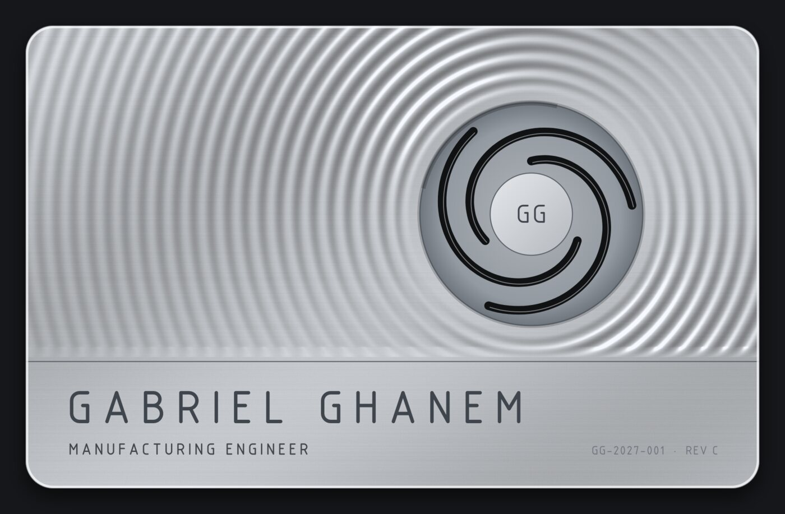
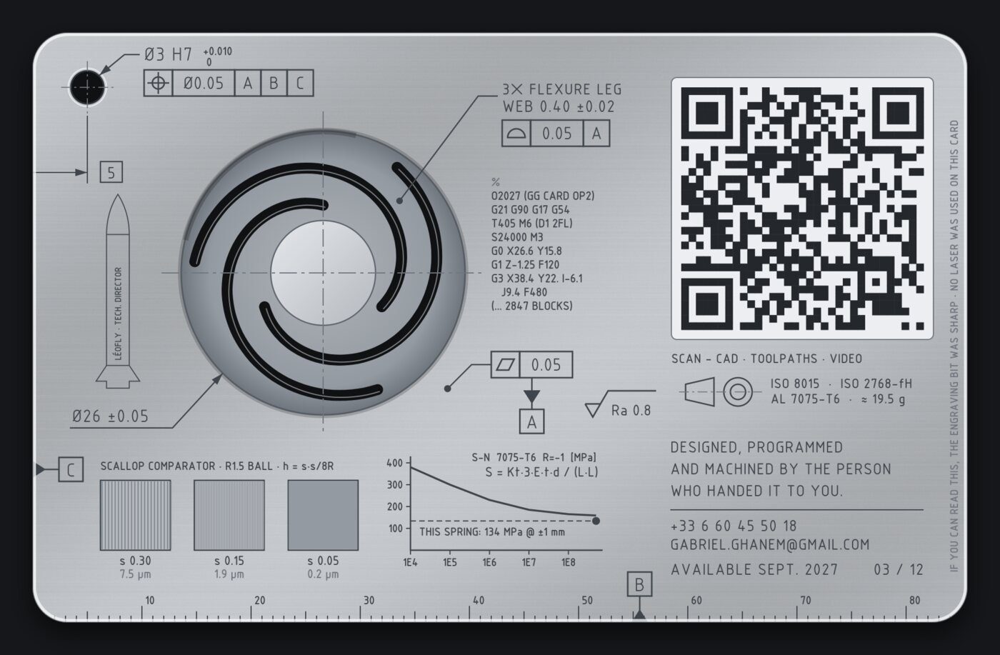
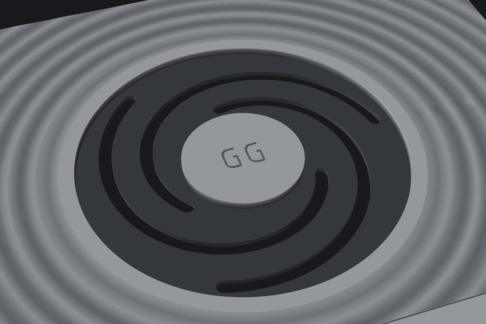

You are holding a card I designed, programmed and machined myself. This page is the other half of it: how it was made, and what else I have built.
Available from September 2027, Paris area. Final-year engineering student at ESILV (computational mechanics), in a work-study position in industrial design.
01 · The card
One part, taken from model to metal
The card is a small machining exercise with a working mechanism in it: the disc in the middle is an orthoplanar spring, three spiral legs cut into a 0.40 mm web, and it moves when you press it.
Everything written on the technical face is meant to be checked against the part in your hand: the hole, the datums, the web thickness, the scallop heights on the three test patches, the point on the fatigue curve.

Recto. The ripples are a 3D surface cut with a ball-nose end mill. Rendered from the model.

Verso. Single-line engraving with a 90° tool; capitals are 0.61 mm tall. Rendered from the model.
Material
Aluminium 7075-T6, 2.00 mm plate, faced to 1.70 mm
Size
85.60 × 53.98 mm (ISO ID-1), about 19.5 g
Spring
Orthoplanar, three legs, 0.40 mm web centred in the thickness
Machine
My own desktop CNC router, refitted with a new controller and a 1.5 kW spindle
Setups
Two, flipped onto two locating pins
Tools
Five: 4 mm bull-nose, 2 mm and 1 mm end mills, 90° engraver, 3 mm ball
02 · Process
How it is made
Model. The whole card is generated from code: layout, lettering, 3D model and the curves the toolpaths follow. Change one number and everything downstream follows.
Program. CAM in Fusion, two setups. Every toolpath is posted and replayed against the design geometry before it runs.
Face. The plate is held with tape and glue, then surfaced so the engraving starts from a plane the machine itself cut.
Machine the verso. Spring recess, holes, engraving, then the card is cut free with a small tab that carries a second locating hole.
Flip. Two pins put the card back within a few hundredths of a millimetre.
Machine the recto. Ripples, second recess, the three spiral slots that free the spring, engraving, chamfer, and the tab comes off.

The spring. Rendered from the model.
03 · Other work
What else I have built
2023 – today · Léofly
Experimental rockets
Technical director for manufacturing from 2024 to 2026 in a student rocketry association flying at C'Space and EuRoC. Led the teams on the Krypton rocket, ran the CAD, CAM and machine-tool training, machined aluminium structure rings and laid up carbon structures.
Personal project
Reverse-draw crossbow
Designed and built from scratch. 32 CNC-machined aluminium parts, third iteration after printed and carbon prototypes, with a parametric model and a simulator for the cocking mechanism.
Personal project
CNC retrofit and GGSender
Rebuilt my CNC router around a new controller and a water-cooled 1.5 kW spindle driven over Modbus, then forked the open-source sender software to change how tool changes work and to log the controller traffic.
2025 – 2027 · Work-study
Industrial design, custom lighting
54 high-end luminaire projects at a custom architectural lighting manufacturer, 19 of them carried alone from the client brief to the manufacturing drawings. Commissioned the company's in-house CNC mill.
04 · Contact
Get in touch
I am looking for a manufacturing, industrialisation or methods engineering position from September 2027.